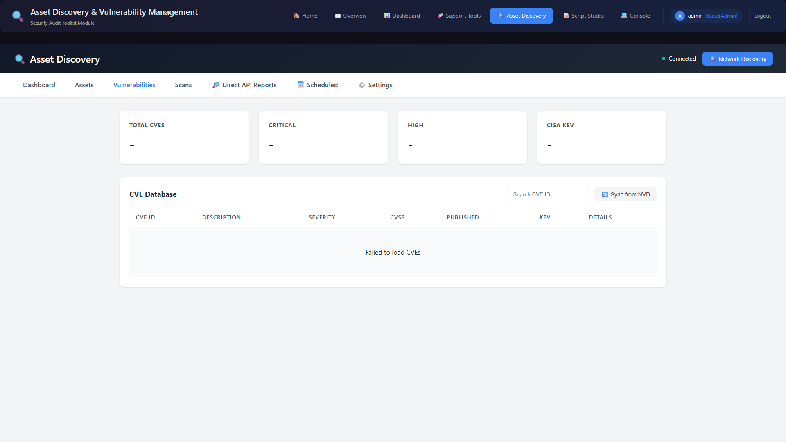
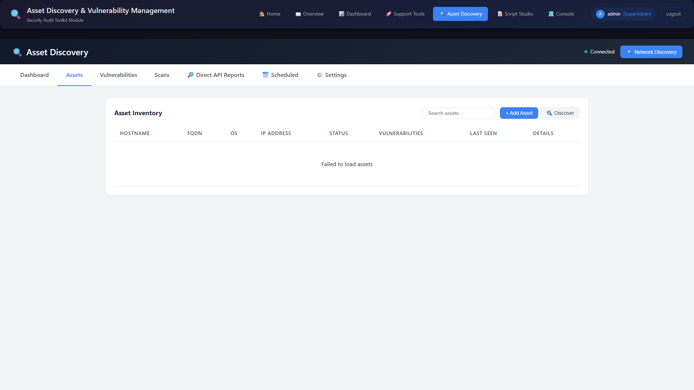
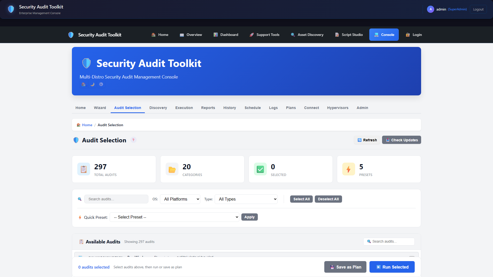
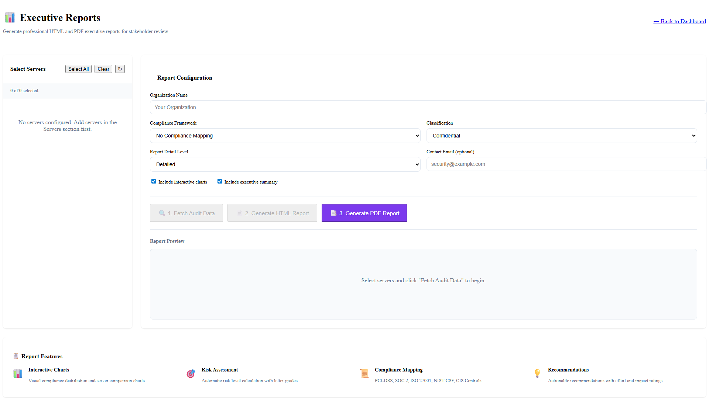
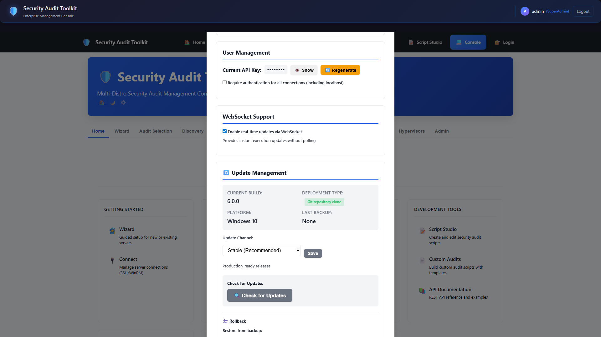

Screenshots
Product screenshots by tool
Screenshot previews are grouped by product to avoid cross-tool confusion. No downloads or commercial checkout links are present on this site.
CMDB API Data Collection Tool


Audit Admin Toolkit - Asset Discovery



Audit Admin Toolkit




Linux Security Lite visuals: Linux-specific screenshots are being curated and are shown on Linux pages only when Linux-native captures are available.
Preview screenshots only — no installers or release binaries are hosted on this site. Commercial licensing is available through Contact Sales via the Licensing & Pricing page.